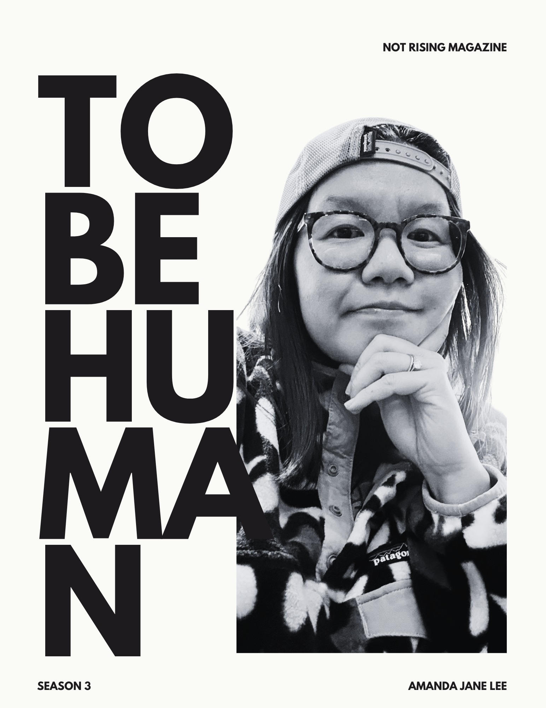

<!doctype html>
<html lang="en">
<head>
<meta charset="utf-8">
<title>To Be Human · Season 3 · Amanda Jane Lee</title>
<!-- TO BE HUMAN, SEASON 3: the magazine, built page by page.
     Every page is 816 x 1056 px = 8.5 x 11 in (the same page as Seasons 1 and 2).
     The script at the bottom pours the text (content.json) into the pages, one column at a time,
     and fills in the contents page once it knows where each chapter starts.
     build.js (Playwright) then saves it as a PDF and as one picture per page for the Newsstand flipbook. -->
<style>
@font-face { font-family: Lexend; font-weight: 200; src: url(fonts/lexend-latin-200-normal.woff2) format("woff2"); }
@font-face { font-family: Lexend; font-weight: 300; src: url(fonts/lexend-latin-300-normal.woff2) format("woff2"); }
@font-face { font-family: Lexend; font-weight: 400; src: url(fonts/lexend-latin-400-normal.woff2) format("woff2"); }
@font-face { font-family: Lexend; font-weight: 500; src: url(fonts/lexend-latin-500-normal.woff2) format("woff2"); }
@font-face { font-family: Lexend; font-weight: 600; src: url(fonts/lexend-latin-600-normal.woff2) format("woff2"); }
@font-face { font-family: Lexend; font-weight: 700; src: url(fonts/lexend-latin-700-normal.woff2) format("woff2"); }
@font-face { font-family: Montserrat; font-weight: 700; src: url(fonts/montserrat-latin-700-normal.woff2) format("woff2"); }
@font-face { font-family: Montserrat; font-weight: 800; src: url(fonts/montserrat-latin-800-normal.woff2) format("woff2"); }

/* THE PALETTE comes from the cover: its paper, its black type, and the deepest black in its photo
   (the photos inside are graded onto the same scale, so their blacks melt into the dark pages
   and their whites into the paper). */
:root {
  --paper: #FAFBF6;      /* the cover's paper */
  --ink: #1D1B1E;        /* the cover's black type */
  --night: #0B0C0E;      /* the deepest black in the cover photo: every dark page */
  --soft-ink: #6E6C70;   /* quiet labels on paper */
  --soft-paper: #9A9B97; /* quiet labels on the dark pages */
  --lh: 23.3125px;       /* one line of body text (23.3125 px = exactly 40 px in the 1400 px page pictures, so lines never wobble) */
}
@page { size: 8.5in 11in; margin: 0; }
html, body { margin: 0; background: #3a3a3a; }
* { box-sizing: border-box; }
.page { position: relative; width: 816px; height: 1056px; overflow: hidden; background: var(--paper); color: var(--ink);
  font-family: Lexend, sans-serif; break-after: page; margin: 0 auto 24px; -webkit-print-color-adjust: exact; print-color-adjust: exact; }
@media print { .page { margin: 0; } }
#book > .page:last-child { break-after: auto; }
.page.dark { background: var(--night); color: var(--paper); }
.abs { position: absolute; }

/* ---------- BODY TEXT ---------- */
.col { position: absolute; top: 82px; height: calc(37 * var(--lh)); width: 331px; overflow: hidden; }
.col p { margin: 0; font: 300 14.5px/var(--lh) Lexend; text-align: justify; hyphens: manual; text-indent: 1.4em;
  font-kerning: normal; word-spacing: -.01em; }
.col p.drop, .col p.lead, .col p.cont { text-indent: 0; }
.col p.drop { display: flow-root; }            /* the paragraph always grows to hold its whole drop cap */
.col p.split { text-align-last: justify; }                 /* a paragraph that carries on in the next column */
.dark .col p { font-weight: 300; }
.sc { font-weight: 500; font-size: .82em; letter-spacing: .09em; text-transform: uppercase; }   /* small-caps lead-in after a break */
.dc { float: left; font: 800 79px/62px Montserrat; margin: 5px 9px 0 -2px; letter-spacing: 0; }  /* drop cap: three lines tall */
.brk { position: relative; height: calc(2 * var(--lh)); }
.brk::after { content: ""; position: absolute; left: 50%; top: 50%; width: 6px; height: 6px; background: currentColor;
  transform: translate(-50%, -50%) rotate(45deg); }
.pull { margin: var(--lh) 0; padding: 16px 0 18px; border-top: 2px solid currentColor; border-bottom: 1px solid currentColor;
  font: 400 21px/1.32 Lexend; letter-spacing: -.01em; text-align: left; }
.endmark { display: inline-block; width: 8px; height: 8px; margin-left: 7px; background: currentColor; vertical-align: 0; }

/* ---------- RUNNING FOOT: page number on the outside corner ---------- */
.foot { position: absolute; bottom: 46px; display: flex; gap: 20px; align-items: baseline;
  font: 600 8.5px/1 Lexend; letter-spacing: .26em; text-transform: uppercase; }
.foot .n { font-weight: 500; letter-spacing: .08em; font-size: 10px; }
.L .foot { left: 66px; }
.R .foot { right: 66px; flex-direction: row-reverse; }
.dark .foot { color: var(--soft-paper); }
.foot { color: var(--soft-ink); }

/* ---------- PHOTO STRIPS (the full-height photo on a dark page) ---------- */
.strip { position: absolute; top: 0; width: 384px; height: 1056px; object-fit: cover; }
.eyebrow { position: absolute; font: 600 9px/1 Lexend; letter-spacing: .3em; text-transform: uppercase; color: var(--soft-paper); }

/* ---------- FRONT AND BACK PAGES ---------- */
.cover-img { position: absolute; inset: 0; width: 100%; height: 100%; object-fit: cover; }
.legal { left: 81px; top: 556px; font: 300 12.5px/1.55 Lexend; }
.legal b { font: 800 17px/1.2 Montserrat; display: block; margin-bottom: 6px; letter-spacing: .01em; }
.legal p { margin: 0 0 12px; }
.legal .mag { font-weight: 600; }
.t-small { font: 700 11px/1 Montserrat; letter-spacing: .02em; text-transform: uppercase; }
.title-big { left: 70px; top: 248px; font: 800 126px/.86 Montserrat; letter-spacing: -.01em; }
.vert { writing-mode: vertical-rl; font: 200 150px/1 Lexend; letter-spacing: .01em; white-space: nowrap; }
.toc-row { position: absolute; left: 282px; width: 462px; height: 132px; display: flex; gap: 25px; }
.toc-row img, .toc-row .tile { width: 132px; height: 132px; flex: none; object-fit: cover; }
.toc-row .tile { background: var(--night); color: var(--paper); display: grid; place-items: center; text-align: center; }
.toc-row .tile span { font: 800 38px/1 Montserrat; letter-spacing: -.01em; }
.toc-row .tile small { display: block; font: 600 8px/1 Lexend; letter-spacing: .3em; margin-bottom: 8px; color: var(--soft-paper); }
.toc-row .txt { padding-top: 26px; flex: 1; }
.toc-row .ch { font: 600 16px/1.2 Lexend; }
.toc-row .tt { font: 300 12px/1.4 Lexend; margin-top: 4px; }
.toc-row .pg { padding-top: 18px; font: 200 32px/1 Lexend; font-variant-numeric: tabular-nums; }
.quote-pg { left: 72px; right: 96px; top: 370px; }
.quote-pg .q { font: 300 43px/1.2 Lexend; letter-spacing: -.015em; text-wrap: balance; }
.quote-pg .by { margin-top: 34px; font: 600 9px/1 Lexend; letter-spacing: .3em; text-transform: uppercase; color: var(--soft-paper); }
.quote-pg .rule { width: 56px; height: 2px; background: currentColor; margin-bottom: 34px; }
.big { font: 800 78px/.9 Montserrat; text-transform: uppercase; letter-spacing: -.005em; }
.cta { display: flex; gap: 26px; align-items: center; }
.cta svg { width: 118px; height: 118px; flex: none; }
.cta .k { font: 600 9px/1 Lexend; letter-spacing: .3em; text-transform: uppercase; color: var(--soft-paper); }
.cta .who { font: 800 24px/1.1 Montserrat; text-transform: uppercase; margin: 10px 0 8px; }
.cta .url { font: 300 14px/1.3 Lexend; }
.pill { display: inline-flex; align-items: center; gap: 10px; margin-top: 18px; height: 40px; padding: 0 20px; border: 1.5px solid currentColor;
  border-radius: 20px; font: 600 10px/1 Lexend; letter-spacing: .26em; text-transform: uppercase; }
.pill svg { width: 12px; height: 12px; }
</style>
</head>
<body>
<div id="book"></div>
<script>
/* Wait for the fonts first: the paginator measures real text, so the letters must be the real ones. */
window.BUILD = (async () => {
await Promise.all(["200","300","400","500","600","700"].map(w => document.fonts.load(`${w} 16px Lexend`)).concat(
  ["700","800"].map(w => document.fonts.load(`${w} 16px Montserrat`))));
/* ============================================================
   THE PAGINATOR. Reads the words (window.CONTENT), lays them
   into columns page after page, and remembers which page each
   chapter starts on (for the contents page).
   ============================================================ */
const CONTENT = window.CONTENT, QR = window.QR;
const book = document.getElementById("book");
const LH = 23.3125;
const pages = [];                                   // every page, in order; pages[0] is the cover (page 1)
const nextIsLeft = () => (pages.length + 1) % 2 === 0;   // even page numbers sit on the left of a spread
const arrow = '<svg viewBox="0 0 12 12" fill="none" stroke="currentColor" stroke-width="1.6"><path d="M2 10 L10 2 M4 2 H10 V8"/></svg>';

function newPage(cls = "", html = "") {
  const pg = document.createElement("section");
  pg.className = "page " + cls + (nextIsLeft() ? " L" : " R");
  pg.innerHTML = html;
  book.appendChild(pg);
  pages.push(pg);
  pg.dataset.folio = pages.length;
  return pg;
}
function foot(pg) {
  const n = pg.dataset.folio;
  const side = pg.dataset.strip === (pg.classList.contains("L") ? "left" : "right") ? ' style="' + (pg.classList.contains("L") ? "left" : "right") + ':419px"' : "";   // the photo is on the outside: the foot moves over to the text
  pg.insertAdjacentHTML("beforeend", pg.classList.contains("L")
    ? `<div class="foot"${side}><span class="n">${n}</span><span>To Be Human · Season 3</span></div>`
    : `<div class="foot"${side}><span class="n">${n}</span><span>Amanda Jane Lee</span></div>`);
}
function col(pg, left, top) {
  const c = document.createElement("div");
  c.className = "col";
  c.style.left = left + "px";
  if (top) { c.style.top = top + "px"; c.style.height = (Math.floor((951.5 - top) / LH) * LH) + "px"; }
  pg.appendChild(c);
  return c;
}

/* ---- one paragraph (or the part of it from word t to word k) ---- */
function para(b, t, k) {
  const p = document.createElement("p");
  const cont = t > 0;
  p.className = cont ? "cont" : (b.kind || "");
  let html = b.tok.slice(t, k).join(" ");
  if (!cont && b.kind === "drop") html = html.replace(/^(\S)/, '<span class="dc">$1</span>');
  if (k === b.tok.length && b.endmark) html += '<span class="endmark"></span>';
  if (k < b.tok.length) p.classList.add("split");
  p.innerHTML = html;
  return p;
}
const fits = c => c.scrollHeight <= c.clientHeight + 1;
const lines = el => Math.round(el.getBoundingClientRect().height / LH);
let measurer;
function linesFrom(b, t, k, width) {                // how many lines would words t..k take?
  if (!measurer) { measurer = document.createElement("div"); measurer.className = "col"; measurer.style.cssText = "visibility:hidden;height:auto;position:absolute;left:-2000px;top:0"; document.body.appendChild(measurer); }
  measurer.style.width = width + "px";
  measurer.innerHTML = "";
  const p = para(b, t, k); p.classList.remove("split"); measurer.appendChild(p);
  return lines(p);
}

/* ---- pour blocks into one column, starting from state st = {b: block, t: word}; returns where it stopped ---- */
let pendingPhoto = null;
const usedPhotos = new Set();
let stopAt = -1;                                    // fill stops when it reaches this block (used to start a photo's section on its photo page)
let deferredPull = null;                            // a pull quote that didn't fit: it opens the next column
function fill(c, blocks, st) {
  if (deferredPull && c.childElementCount === 0) {
    const el = document.createElement("div"); el.className = "pull"; el.textContent = deferredPull; c.appendChild(el); deferredPull = null;
  }
  while (st.b < blocks.length) {
    if (st.b === stopAt && st.t === 0) return st;
    const b = blocks[st.b];
    if (b.type === "photo") { if (!usedPhotos.has(b.name)) pendingPhoto = b.name; st = { b: st.b + 1, t: 0 }; continue; }   // its photo takes the next page
    if (b.type === "break" || b.type === "pull") {
      const el = document.createElement("div");
      el.className = b.type === "break" ? "brk" : "pull";
      if (b.type === "pull") el.textContent = b.text;
      c.appendChild(el);
      if (!fits(c)) {
        el.remove();
        if (b.type === "pull" && c.childElementCount > 0) { deferredPull = b.text; st = { b: st.b + 1, t: 0 }; continue; }   // no room: the text carries on, the quote waits for the next column
        return st;
      }
      if (b.type === "break") {                         // never leave a break alone at a column's foot: it travels with two lines of what follows
        const nb = blocks.slice(st.b + 1).find(x => x.type === "p");
        if (nb) { const probe = para(nb, 0, Math.min(nb.tok.length, 14)); c.appendChild(probe); const ok = fits(c); probe.remove(); if (!ok) { el.remove(); return st; } }
      }
      st = { b: st.b + 1, t: 0 };
      continue;
    }
    const n = b.tok.length;
    let el = para(b, st.t, n);
    c.appendChild(el);
    if (fits(c)) { st = { b: st.b + 1, t: 0 }; continue; }
    let lo = st.t, hi = n;                               // the most words that fit (binary search)
    while (hi - lo > 1) {
      const mid = (lo + hi) >> 1;
      const t = para(b, st.t, mid); el.replaceWith(t); el = t;
      if (fits(c)) lo = mid; else hi = mid;
    }
    let k = lo;
    const w = c.clientWidth;
    if (k > st.t && st.t === 0 && linesFrom(b, 0, k, w) < 2) k = st.t;        // no lone first line at a column's foot
    if (k > st.t && k < n && linesFrom(b, k, n, w) < 2) {                       // no lone last line at a column's head:
      const keep = linesFrom(b, st.t, k, w) - 1;                                  // send one whole line over with it
      let a = st.t, z = k;                                                        // (cut at a line's end, so no line is stretched)
      while (z - a > 1) { const m = (a + z) >> 1; if (linesFrom(b, st.t, m, w) <= keep) a = m; else z = m; }
      k = a;
    }
    if (k > st.t && st.t === 0 && linesFrom(b, 0, k, w) < 2) k = st.t;
    if (k === st.t && c.childElementCount === 1) k = Math.max(lo, st.t + 1);    // an empty column always takes something
    if (k === st.t) { el.remove(); return st; }
    const fin = para(b, st.t, k); el.replaceWith(fin);
    return { b: st.b, t: k };
  }
  return st;
}

/* ---- page types ---- */
function textPage() {
  const pg = newPage("");
  const L = pg.classList.contains("L");
  return { pg, cols: [col(pg, L ? 66 : 60), col(pg, L ? 425 : 419)] };
}
function photoPage(name, stripOnLeft, top) {
  const pg = newPage("dark");
  pg.dataset.strip = stripOnLeft ? "left" : "right";
  pg.insertAdjacentHTML("beforeend", ``);
  return { pg, cols: [col(pg, stripOnLeft ? 419 : 66, top)] };
}
function quotePage(text, by) {
  return newPage("dark quote", `<div class="abs quote-pg"><div class="rule"></div><div class="q">${text}</div><div class="by">${by}</div></div>`);
}

function balanceTo(last, end, blocks) {
  const cols = last.page.cols;
  if (cols.length < 2) return;
  for (let n = 2; n <= 37; n++) {                      // the shortest pair of columns that holds it all
    deferredPull = null;
    cols.forEach(c => { c.innerHTML = ""; c.style.height = n * LH + "px"; });
    let s = { ...last.start };
    for (const c of cols) s = fill(c, last.blocks, s);
    if (s.b >= end.b) return;
  }
}

/* ============ FRONT OF THE BOOK ============ */
newPage("cover", '');                                    // 1
newPage("dark", `<div class="abs legal"><b>TO BE HUMAN: SEASON 3</b><p>By Amanda Jane Lee</p>
  <p>Copyright © 2026 NOT RISING Magazine<br>All rights reserved.</p><p>First edition, 2026</p>
  <p><span class="mag">NOT RISING Magazine</span><br>thisisnotrising.org</p></div>`);                       // 2 (inside front cover)
newPage("", `<div class="abs t-small" style="right:72px;top:76px;font-size:10px">This is not rising</div>
  <div class="abs title-big">TO<br>BE<br>HUMAN</div>
  <div class="abs" style="left:74px;top:616px;font:800 35px/1 Montserrat">SEASON 3</div>
  <div class="abs t-small" style="left:74px;bottom:62px;font-size:10px">A micro memoir</div>
  <div class="abs t-small" style="right:72px;bottom:62px;font-size:10px">Amanda Jane Lee</div>`);              // 3 title page
const toc = newPage("", '<div class="abs vert" style="left:58px;top:40px">contents</div>');                  // 4 contents
quotePage("You don’t celebrate. You wait while, somewhere unseen, a longer trip than yours is underway.", "Amanda Jane Lee · Chapter 1");                       // 5 epigraph

/* ============ THE CHAPTERS ============ */
const starts = [];
CONTENT.forEach((ch, i) => {
  if (!nextIsLeft()) { const prev = CONTENT[i - 1]; quotePage(prev.filler, `Chapter ${prev.n} · ${prev.title}`); }   // openers always start on a left page
  const op = newPage("dark", `<div class="abs vert" style="left:36px;top:52px">CHAPTER ${ch.n}</div>
    <div class="abs" style="right:66px;bottom:150px;font:600 9px/1 Lexend;letter-spacing:.3em;color:var(--soft-paper)">TO BE HUMAN · SEASON 3</div>
    <div class="abs" style="right:62px;bottom:62px;font:400 72px/1 Lexend;letter-spacing:-.01em">${ch.title}</div>`);
  starts.push(+op.dataset.folio);
  // first page: the chapter's photo against the spine, text beside it
  let st = { b: 0, t: 0 };
  let { pg, cols } = photoPage(ch.photo, true, 176);
  pg.insertAdjacentHTML("beforeend", `<div class="eyebrow" style="left:419px;top:118px">Chapter ${ch.n} · ${ch.title}</div>`);
  foot(pg);
  st = fill(cols[0], ch.blocks, st);
  /* the rest of the chapter: two-column pages on paper, or a dark photo page when a photo is waiting for one.
     If the chapter ends before its photo got a page, its last page is redone as the photo page. */
  usedPhotos.add(ch.photo);
  let last = { page: { pg, cols }, start: { b: 0, t: 0 }, photo: ch.photo, blocks: ch.blocks };
  for (let guard = 0; guard < 60; guard++) {
    if (st.b >= ch.blocks.length) {
      if (!pendingPhoto) break;
      /* the chapter ended before its photo got a page: the last page stops where the photo's section begins
         (and balances its columns), and the section moves onto the photo's own page */
      const photo = pendingPhoto; pendingPhoto = null; usedPhotos.add(photo);
      const marker = ch.blocks.findIndex(x => x.type === "photo" && x.name === photo);
      const sec = ch.blocks[marker - 1] && ch.blocks[marker - 1].type === "break" ? marker - 1 : marker;
      stopAt = sec; balanceTo(last, { b: sec, t: 0 }); stopAt = -1;
      if (last.page.cols.length === 2 && last.page.cols[0].clientHeight / LH < 22) {
        /* that would leave the page before less than 60% full: instead the photo page takes over from where
           that page began, and the text runs on after it */
        last.page.pg.remove(); pages.pop();
        const pp = photoPage(photo, nextIsLeft()); foot(pp.pg);
        st = { ...last.start };
        for (const c of pp.cols) st = fill(c, ch.blocks, st);
        last = { page: pp, start: { ...last.start }, photo, blocks: ch.blocks };
        continue;
      }
      const pp = photoPage(photo, nextIsLeft()); foot(pp.pg);
      st = { b: marker + 1, t: 0 };
      for (const c of pp.cols) st = fill(c, ch.blocks, st);
      last = { page: pp, start: { b: marker + 1, t: 0 }, photo, blocks: ch.blocks };
      continue;
    }
    const start = { ...st }, photo = pendingPhoto;
    pendingPhoto = null;
    if (photo) usedPhotos.add(photo);
    const page = photo ? photoPage(photo, nextIsLeft()) : textPage();
    foot(page.pg);
    for (const c of page.cols) st = fill(c, ch.blocks, st);
    /* the chapter ended and its photo page holds only a few lines: give the photo its whole section instead
       (the page before stops where the section begins and balances its columns) */
    const usedLines = page.cols.reduce((h, c) => h + [...c.children].reduce((m, e) => Math.max(m, e.offsetTop + e.offsetHeight), 0), 0) / LH;
    if (photo && st.b >= ch.blocks.length && usedLines < 6 && last.page.cols.length === 2) {
      const marker = ch.blocks.findIndex(x => x.type === "photo" && x.name === photo);
      const sec = ch.blocks[marker - 1] && ch.blocks[marker - 1].type === "break" ? marker - 1 : marker;   // the break before it goes too
      page.pg.remove(); pages.pop();
      stopAt = sec;
      balanceTo(last, { b: sec, t: 0 });
      stopAt = -1;
      const pp = photoPage(photo, nextIsLeft()); foot(pp.pg);
      st = { b: marker + 1, t: 0 };
      for (const c of pp.cols) st = fill(c, ch.blocks, st);
      last = { page: pp, start: { b: marker + 1, t: 0 }, photo, blocks: ch.blocks };
      continue;
    }
    last = { page, start, photo, blocks: ch.blocks };
  }
  pendingPhoto = null;
  /* the chapter's last page shares its words evenly between its two columns, the way a magazine balances
     the last page of a story */
  balanceTo(last, { b: ch.blocks.length, t: 0 });
  deferredPull = null;
});

/* ============ BACK OF THE BOOK ============ */
/* The finale page comes straight after the last chapter, so its cliffhanger turns into the announcement. */
const fin = newPage("dark finale", `
  <div class="eyebrow" style="left:72px;top:80px">To Be Human · Season 3 · Chapter 5</div>
  <div class="abs big" style="left:70px;top:330px">The<br>Season<br>Finale</div>
  <div class="abs" style="left:73px;top:594px;font:300 34px/1.2 Lexend;letter-spacing:-.01em">arrives Saturday 11.7</div>`);
/* the last spread before the back cover: Read it online | Subscribe to Amanda (one call to action per page) */
const online = newPage("dark", `
  <div class="abs big" style="left:70px;top:330px">Read it<br>online</div>
  <div class="abs cta" style="left:72px;top:540px">${QR.online}
    <div><div class="k">To Be Human</div><div class="url" style="margin-top:12px">chiefabsurdistofficer.substack.com<br>/s/to-be-human</div></div></div>`);
const sub = newPage("dark", `
  <div class="abs big" style="left:70px;top:330px">Subscribe<br>to Amanda</div>
  <div class="abs cta" style="left:72px;top:540px">${QR.amanda}
    <div><div class="k">On Substack</div><div class="who">Amanda Jane Lee</div><div class="url">substack.com/@ajlol</div>
    <div class="pill">Subscribe ${arrow}</div></div></div>`);
if (!nextIsLeft()) quotePage(CONTENT[CONTENT.length - 1].filler, `Chapter ${CONTENT[CONTENT.length - 1].n} · ${CONTENT[CONTENT.length - 1].title}`);   // the back cover is always an even page
/* the back cover: the front cover's own paper, with Season 2's QR code and line (same size and spot as
   tools/back-cover/back-cover.html, which makes the Newsstand's back-cover pictures) */
const back = newPage("back", `<div class="abs" style="left:367px;top:907px;width:82px;height:82px">${QR.back}</div>
  <div class="abs" style="left:0;right:0;top:999.6px;text-align:center;white-space:nowrap;font:700 10.5px/1 Montserrat;letter-spacing:.06em">NOT RISING Magazine © 2026</div>`);
back.querySelector("svg").setAttribute("style", "width:100%;height:100%;display:block");

/* ============ CONTENTS: now that the chapters have page numbers ============ */
const rowTop = [168, 324, 480, 636, 792];
CONTENT.forEach((ch, i) => toc.insertAdjacentHTML("beforeend",
  `<div class="toc-row" style="top:${rowTop[i]}px" data-to="${starts[i]}">
   <div class="txt"><div class="ch">Chapter ${ch.n}</div><div class="tt">${ch.title}</div></div><div class="pg">${starts[i]}</div></div>`));
toc.insertAdjacentHTML("beforeend", `<div class="toc-row" style="top:${rowTop[4]}px" data-to="${fin.dataset.folio}">
  <div class="tile"><div><small>SAT</small><span>11.7</span></div></div>
  <div class="txt"><div class="ch">Chapter 5</div><div class="tt">The Season Finale · arrives Saturday 11.7</div></div><div class="pg"></div></div>`);

/* A report for the build script: page count, where things are, and any column that overflowed */
window.REPORT = {
  pages: pages.length, chapters: starts,
  overflow: [...document.querySelectorAll(".col")].filter(c => !fits(c)).map(c => c.closest(".page").dataset.folio),
  kinds: pages.map(p => p.className.replace("page ", "")),
  tocRows: [...toc.querySelectorAll(".toc-row")].map(r => { const b = r.getBoundingClientRect(), o = toc.getBoundingClientRect(); return { to: +r.dataset.to, x: b.left - o.left, y: b.top - o.top, w: b.width, h: b.height }; }),
  finale: +fin.dataset.folio, online: +online.dataset.folio, subscribe: +sub.dataset.folio,
  cta: (() => { const b = sub.querySelector(".cta").getBoundingClientRect(), o = sub.getBoundingClientRect(); return { x: b.left - o.left, y: b.top - o.top, w: b.width, h: b.height }; })(),
  onlineCta: (() => { const b = online.querySelector(".cta").getBoundingClientRect(), o = online.getBoundingClientRect(); return { x: b.left - o.left, y: b.top - o.top, w: b.width, h: b.height }; })()
};
if (measurer) measurer.remove();
await Promise.all([...document.images].map(i => i.decode().catch(() => {})));
return window.REPORT;
})();
</script>
</body>
</html>
